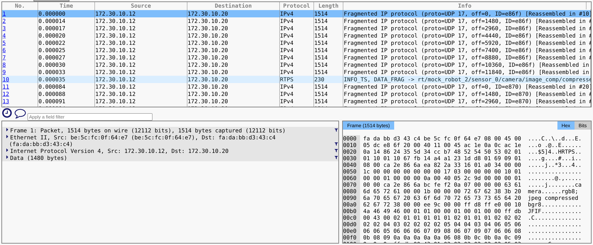
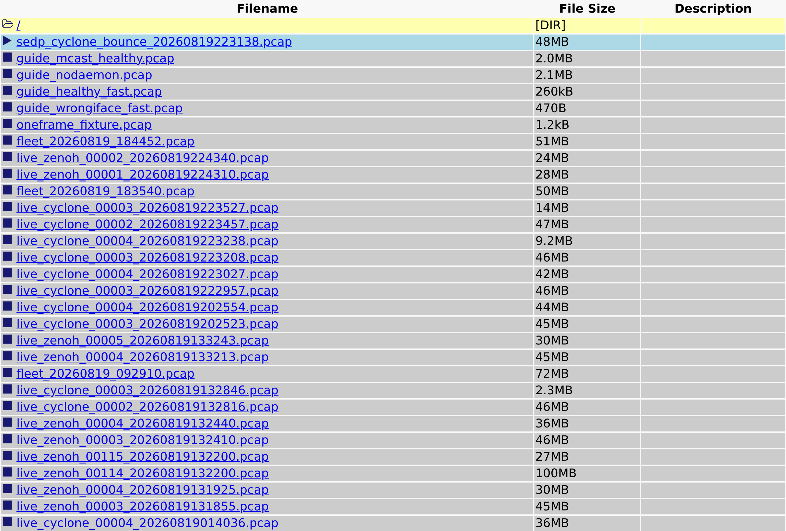
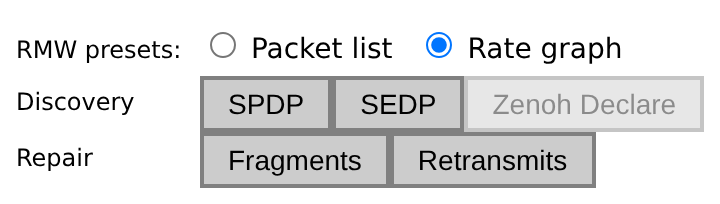
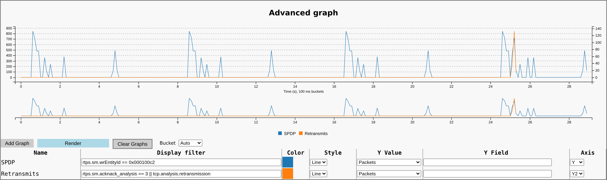
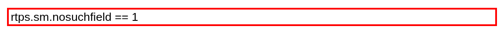

Webshark field guide
Reading ROS 2 middleware traffic from a packet capture. This build: Wireshark 4.6, zenoh-dissector 1.9.0, RTPS and Zenoh decoding, amd64 and arm64 Linux.
New to packet capture? Read straight through. Section 3 is the part that makes everything after it legible, and nothing later assumes more than it teaches.
Came from the workshop? You have already seen most of section 3. Skip to section 4 and come back to section 3 when a term stops you. This guide is deliberately more thorough than the lab was.
Everything here works on a capture from your own robot. Numbers quoted as examples are measured from named captures, and where something is reasoned rather than measured it says so.
1. Why this build is customized
Stock Webshark is a browser front end for sharkd, the Wireshark engine. It will
open your capture and decode it, but it knows nothing about ROS 2. For example, it leaves you
to remember that participant discovery lives at entity id 0x000100c2 and to type
that yourself.
This build adds the ROS 2 knowledge: one-click filters for the four things that actually answer middleware questions, a badge that names which middleware produced the capture, a graph you can read, and a Zenoh dissector that stock Wireshark does not ship. It also fixes a handful of upstream bugs that get in the way. Appendix A lists every addition, what it is for, and where you see it.
2. Why look at the wire at all
Logs tell you what a node believed. A capture tells you what left the machine. When a publisher's logs say it is publishing and a subscriber's logs say it is receiving nothing, exactly one of them is wrong about the network, and a view of the wire settles it.
Getting that answer costs you nothing on the robot. You do not add a library, change a launch file, or restart anything to take a capture, which matters on a robot you did not build or one that only misbehaves in the field.
A capture is also just a file. You can take one on a robot today, hand it to somebody else next week, and they can answer questions about a machine they have never touched and that may no longer be reachable. An MCAP recording travels the same way, and for questions about message content it is the better file. But MCAP records messages a node already received, so it cannot show you discovery, fragmentation, a retransmission, or the case where nothing arrived at all. Those are the middleware questions, and the pcap is the file that answers them.
The capture host and the analysis host do not have to be the same machine. Capture on the robot with whatever it already has, copy the file off, and open it wherever you can run this image. If you have a robot and a laptop, you almost certainly have somewhere to run it.
3. What you are looking at
This section is the vocabulary the rest of the guide uses. If you already read packet captures, skim 3.1 and start at 3.2.
3.1 Packet capture basics
A frame is one unit of data as it appeared on the network, with all of its headers. People say packet for the same thing in casual use and this guide does too. A capture file is a list of frames with timestamps, in order.
There are two kinds of filter and confusing them wastes a lot of time.
- A capture filter decides what gets written to disk. You give it to
tcpdumportsharkwhen you start capturing, and anything it rejects is gone forever. Its syntax is BPF, for exampleudp port 13650. - A display filter decides what you are shown out of a file you already
have. That is what the box at the top of Webshark takes, and what every preset in this guide
uses. Its syntax is Wireshark's own, for example
rtps.sm.id == 0x15. Nothing is lost, so you can change it freely.
Prefer a wide capture filter and a narrow display filter. You can always narrow later, and you can never widen a capture you already took.
Webshark shows a capture in three areas, the same layout desktop Wireshark uses.

DATA_FRAG -> rt/mock_robot_2/…/image_comp/compressed, which is the
topic-name resolution described in 3.3: this capture caught discovery, so Wireshark can name
the topic a fragment belongs to.Every field in the detail tree carries a funnel on its right. Clicking it filters the packet list to that field's value, which is how you get from one interesting frame to every frame like it without typing anything. Ctrl-click opens that filter in a new tab instead.
Taking a capture, rather than reading one, needs a little more vocabulary.
An interface is one network connection on the machine, named something like
eth0, enp3s0 or wlan0. You capture on one interface at a
time, and picking the wrong one is the single most common way to end up with an empty file.
Promiscuous mode asks the interface to hand you frames that were not addressed
to your machine. Capture tools turn it on by default. On a switched network it buys you less
than people expect, because the switch will not send you other machines' unicast traffic
regardless.
Two special cases decide whether traffic is capturable at all. Loopback is
the virtual interface, usually lo, that a machine uses to talk to itself. It is
capturable, but only if you capture on lo rather than on the real network card.
Shared memory is a transport that skips the network entirely and hands data
between processes through memory both can see. Middleware uses it for same-host communication
because it is much faster, and it is not capturable by any packet tool, because the
data never becomes a packet. If both ends of the conversation you care about are on one
machine, check this before concluding anything is broken.
Snaplen is how many bytes of each frame get written. Cutting it makes files smaller and is a common piece of advice, and for this work it is bad advice. Topic names live in the payload of discovery messages, well past any short snaplen, so a truncated capture can tell you that discovery happened while being unable to tell you what was discovered. Capture whole frames.
3.2 How ROS 2 gets onto the wire
ROS 2 does not define a network protocol. It defines an interface, the RMW, and a middleware implementation sits behind it and does the actual networking. Swap the implementation and the same ROS 2 code produces completely different traffic. The three you are likely to meet on Jazzy:
| RMW | Protocol on the wire | Decoded by |
|---|---|---|
rmw_cyclonedds_cpp | RTPS over UDP | Wireshark's built-in rtps |
rmw_fastrtps_cpp | RTPS over UDP | Wireshark's built-in rtps |
rmw_zenoh_cpp | Zenoh over TCP, UDP, or QUIC | the zenoh-dissector plugin in this image, over TCP and UDP only |
Zenoh can also run over QUIC, and this build will not decode that. QUIC encrypts its payload, so reading the Zenoh inside it would need the session's TLS keys, and the dissector registers only on TCP and UDP port 7447 in any case. On a QUIC capture the frames still dissect as QUIC, and the Zenoh inside them stays opaque.
Check which one a machine is using with echo $RMW_IMPLEMENTATION. An unset
value means the default, which on Jazzy is Fast DDS.
Names get rewritten on the way to the wire. Under DDS, a ROS 2 topic
/scan becomes a DDS topic rt/scan. The prefix says which kind of ROS 2
entity it is: rt/ for topics, rq/ and rr/ for the request
and reply halves of services. Type names get mangled too, so
sensor_msgs/msg/LaserScan appears as
sensor_msgs::msg::dds_::LaserScan_. When you search a capture for a topic name,
search for the mangled form or search for the bare word without a leading slash.
A ROS 2 node is not exactly a DDS participant. A participant is the unit that owns a network endpoint and announces itself; a process usually has one, and several nodes in one process share it. This is why counting participants in a capture gives you a number lower than your node count, and why the count is not wrong.
The domain id decides the port numbers, which is worth knowing because it turns a vague question into arithmetic. RTPS computes ports as
multicast discovery: 7400 + 250 * domain
unicast discovery: 7400 + 250 * domain + 10 + 2 * participant_indexSo ROS_DOMAIN_ID=25 puts multicast discovery on port 13650 and unicast discovery
on 13660, 13662, 13664 and upward, one pair per participant on the machine. Two robots that
cannot see each other and are on different domain ids are talking on different ports entirely,
and the capture shows that immediately.
These numbers are verified against this repo's own captures rather than quoted from the
spec: on domain 25, a Fast DDS fleet sends discovery to 239.255.0.1:13650, and a
Cyclone fleet configured without multicast sends to unicast ports 13660 through 13898.
3.3 RTPS on the wire
RTPS is the protocol both DDS implementations speak. One UDP datagram carries one RTPS message, and each message carries one or more submessages. Keep the two apart when you read a count, for the reason section 3.7 measures.
The submessage types you need:
| Submessage | Filter | What it is |
|---|---|---|
DATA | rtps.sm.id == 0x15 | An actual sample. Discovery announcements are also DATA, just on builtin topics. |
DATA_FRAG | rtps.sm.id == 0x16 | One piece of a sample too big for a single datagram. |
HEARTBEAT | rtps.sm.id == 0x07 | A reliable writer saying which sequence numbers it currently holds. |
ACKNACK | rtps.sm.id == 0x06 | A reader replying with what it has and what it is missing. |
GAP | rtps.sm.id == 0x08 | A writer saying a sequence number is intentionally absent, so stop waiting for it. |
MTU and fragmentation. Every network link has a maximum transmission unit,
the largest frame it will carry, typically 1500 bytes on Ethernet. Anything larger has to be
split. A camera image is far larger, so it goes out as a run of DATA_FRAG
submessages that the receiver reassembles. The consequence that bites: every fragment must
arrive for the sample to be usable, so a link losing a small percentage of frames can pass
short messages perfectly while never completing a long one.
Every writer and reader has a GUID, 16 bytes made of a per-participant
prefix and a per-entity id. Wireshark shows them as rtps.guidPrefix and
rtps.sm.wrEntityId. The important consequence: a normal RTPS data packet
does not contain the topic name. It contains a writer GUID. The only place a GUID gets
tied to a topic name is discovery, which is why a capture that missed discovery can show you
plenty of traffic that you cannot attribute to anything.
There is a direct payoff for capturing discovery, beyond being able to search for a topic.
Wireshark remembers the GUID-to-topic mapping as it reads the file, so once discovery is in the
capture it labels later frames with the topic name for you. On a capture that caught
it, a repair message reads GAP -> rt/parameter_events rather than a bare GUID. On
a capture that missed it, the same frame is anonymous.
Entity ids below 0x000100c2 and similar reserved values are builtin endpoints,
the ones DDS uses to run itself. The three that matter here:
| Entity id | Endpoint |
|---|---|
0x000100c2 | participant announcements (SPDP) |
0x000003c2 | publication announcements (SEDP, writers) |
0x000004c2 | subscription announcements (SEDP, readers) |
Finding a field in the packet tree. A SEDP or SPDP announcement's payload is
one DATA submessage whose serializedData holds a flat parameter list,
not a single struct. Expand DATA, then serializedData, then
the inner serializedData: node it contains, and every field arrives as its own
named row: PID_TOPIC_NAME, PID_RELIABILITY,
PID_ENDPOINT_GUID, and the rest of whatever that announcement carries. Expand the
one you want and its value is the row under it: topic under
PID_TOPIC_NAME, Kind under PID_RELIABILITY. The list
never nests deeper than that, so the same path finds every parameter.
Reliability, in one paragraph. A reliable writer numbers its samples and
keeps them until acknowledged. It periodically sends a HEARTBEAT naming the range it holds.
Readers reply with ACKNACK saying what they have. If a reader reports a hole, the writer
resends. So a steady trickle of ACKNACK is the protocol working normally, not a problem, and
this trips people up constantly. What you want is the subset of ACKNACKs that actually reported
a gap, and Wireshark computes exactly that as
rtps.sm.acknack_analysis == 3.
3.4 Discovery
Nothing in DDS is configured with addresses of peers by default. Participants find each other at runtime, in two stages.
SPDP, participant discovery, is the first stage. Every participant periodically announces "I exist, here is my GUID prefix and here is how to reach me". This is the bootstrap, so it is sent to a well-known address, and it is best-effort: an announcement that gets lost is simply sent again on the next tick.
SEDP, endpoint discovery, is the second. Once two participants know about
each other, they tell each other about every writer and reader they own, and these
messages carry the topic name, the type name and the full QoS. SEDP runs over reliable builtin
endpoints, which has a practical consequence for filtering: the SEDP entity ids also appear on
those endpoints' own HEARTBEAT and ACKNACK traffic, so a filter on entity id alone buries the
announcements under their own bookkeeping. Add rtps.sm.id == 0x15 to keep only the
announcements.
Discovery only happens when participants join. A capture started on an already-running robot contains no discovery at all, so it has no topic names in it and several of the checks in section 5 return nothing on a robot that is working perfectly. Section 4 is mostly about avoiding this.
Whether discovery uses multicast changes what a capture means. SPDP is
normally multicast, to group 239.255.0.1 on the port from section 3.2. Plenty of
real deployments turn that off, because Wi-Fi handles multicast badly and many switches and
cloud networks drop it. The alternative is a static peer list, where each participant is told
the addresses to contact and sends its announcements to each of them by unicast.
Both arrangements are normal, and telling them apart is easy once you know to look, so it is worth doing before you conclude a missing robot means a broken one:
| What you see | What it means |
|---|---|
SPDP to 239.255.0.1 | multicast discovery, working |
| no multicast, SPDP unicast to a few fixed addresses | static peer list, working as configured |
your own machine sending to 239.255.0.1 and nothing coming back | multicast is configured but the network is eating it |
Measured examples of the first two, both from this repo's own fleet on domain 25. Fast DDS
with default discovery: 295 announcements to 239.255.0.1:13650. Cyclone configured
with AllowMulticast off and a static peer list: zero frames to 13650, and instead
18583 announcements spread over 120 unicast ports from 13660 to 13898 in 30 seconds.
18583 in half a minute reads like a discovery storm, and it is not one. That fleet sets a maximum participant index of 120, and with multicast off each participant unicasts its announcement to every candidate participant port on every peer, so one logical announcement becomes 120 frames. A large SPDP count is a property of the discovery configuration before it is evidence of anything wrong.
3.5 QoS on the wire
DDS negotiates quality of service per topic, and mismatched settings are a leading cause of "they can see each other but no data arrives". The rule is that the writer must offer at least what the reader requests. A best-effort writer does not satisfy a reliable reader, so they simply never connect, and neither side logs an error by default.
The policies that break things in practice:
| Policy | Values | Mismatch effect |
|---|---|---|
| Reliability | best-effort, reliable | best-effort writer plus reliable reader never match |
| Durability | volatile, transient-local | volatile writer plus transient-local reader never match; also why a late subscriber misses a latched topic |
| History | keep-last(depth), keep-all | no match failure, but a shallow depth silently drops samples under load |
| Deadline, liveliness | durations | a reader requesting a tighter deadline than the writer offers never matches |
The capture can settle this argument, because SEDP announcements carry the QoS. Filter to SEDP, click an announcement for the topic in question, and read the parameter list in the detail pane. You get both sides from one capture: what the writer offered and what the reader requested, in their own words, with no need to trust either node's configuration files.
This only works if the capture caught discovery. It is the strongest single reason to get section 4 right.
3.6 Zenoh is a different model
rmw_zenoh_cpp is not DDS and shares none of the above. Nothing in this section
has an RTPS equivalent, and the RTPS presets return zero on a Zenoh capture, correctly.
Zenoh's units are sessions rather than participants. A session connects to
the network in one of three roles: a router that forwards, a
peer that talks directly to other peers, or a client that
connects through a router. ROS 2 on Zenoh normally runs a router process,
rmw_zenohd, with the nodes as clients of it. That means traffic goes to the router
and back out, so where you capture determines what you see even more than it does with DDS.
Instead of topics, Zenoh has key expressions, slash-separated strings that
support wildcards. ROS 2 builds one per endpoint, and the domain id is the leading field, so a
key expression starts with the domain rather than the topic. Do not hardcode a leading
0/ when searching; check what domain the robot uses first.
Declare is the closest thing to discovery. A session declares its key expressions once, at session setup, and the router remembers them. The timing catch is sharper than SEDP's: because declarations go to the router rather than being re-sent to newcomers, starting a new node does not make existing sessions re-declare. Getting them back means restarting the router so every session reconnects and declares again.
The fields worth knowing, all leaves rather than the tree nodes above them. A filter on
zenoh.body.frame matches nothing, because the parent is only a label in the detail
pane. zenoh.body.frame.sn is a real field. Counts are from
live_zenoh_00001, one 27 MB capture of a six-session fleet:
| Filter | What it is | Count |
|---|---|---|
zenoh | any Zenoh frame, the "is the dissector working" check | 18136 |
zenoh.body.init_syn.version | a session opening, first half of the handshake | 6 |
zenoh.body.init_ack.zid | the reply, carrying the peer's Zenoh id | 6 |
zenoh.body.open_syn.initial_sn | the session opening for data | 6 |
zenoh.body.open_ack.initial_sn | the reply that completes setup | 6 |
…declare_key_expr.wire_expr | a declaration, Zenoh's discovery. The Declare preset. | 1534 |
…push.payload.put.payload | an actual data sample | 16210 |
zenoh.body.frame.sn | sequence number, present on nearly every frame | 18070 |
zenoh.body.close.reason | a session ending | 6 |
The two declare and push filters are abbreviated above. In full they
are zenoh.body.frame.payload.body.declare.body.declare_key_expr.wire_expr and
zenoh.body.frame.payload.body.push.payload.put.payload. The dissector exposes 128
fields in total, and tshark -G fields | grep zenoh lists them.
Those counts are the shape of a healthy session: six opened, six acknowledged, six opened for
data, six acknowledged again, six closed. What you are reading is the symmetry. An
init_syn with no matching init_ack is a session that never formed, and
section 5.10 works through that.
Zenoh's reliable mode here runs over TCP, so repair is TCP's own retransmission rather than an application-level message. That is why the Retransmits preset covers both mechanisms in one filter. It also means loss hurts Zenoh differently: TCP head-of-line blocks the whole stream behind a missing segment, where RTPS over UDP resends just the missing sample.
3.7 The three RMWs compared
Two of the three speak the same protocol, and it is tempting to treat them as interchangeable when reading a capture. They are not, in one way that will confuse your counts.
Bundling. RTPS lets a sender pack several submessages into one datagram, and the two implementations do it at completely different rates. Measured on this repo's captures, counting how many RTPS vendor ids each frame carries, which is one per bundled message:
| Stack | One message per frame | Two or more | Bundled |
|---|---|---|---|
| Cyclone | 7514 | 18656 | 70% |
| Fast DDS | 453714 | 13266 | 2.8% |
So frame counts are not submessage counts, and the gap between them is seven times larger on Cyclone. Compare a stack against itself over time rather than against the other stack's numbers.
Bundling also affects a filter you will use, because a Wireshark display filter matches fields anywhere in a frame, not within one submessage. A frame that bundles somebody else's DATA with a SEDP HEARTBEAT matches the SEDP filter without containing an announcement. Measured at 8 frames out of 824 on Cyclone and 0 on Fast DDS. Wireshark has no way to scope a filter to one submessage, so this is a floor on precision rather than a bug, and at roughly 1% it does not change any conclusion. Know it before you go hunting for the discrepancy.
| Cyclone | Fast DDS | Zenoh | |
|---|---|---|---|
| Protocol | RTPS/UDP | RTPS/UDP | Zenoh/TCP, UDP or QUIC |
| Vendor id in capture | 0x0110 | 0x010f | n/a |
| Discovery | SPDP then SEDP | SPDP then SEDP | Declare, once, to the router |
| Replaying discovery | start a node, or ros2 topic list --no-daemon | restart the router | |
| Repair shows as | ACKNACK asking for a resend | TCP retransmission | |
| Bundles submessages | heavily | rarely | n/a |
4. Taking a capture
This section is the one that decides whether the rest of the guide can help you. Almost every unusable capture is unusable for a reason listed here.
Everything up to "Get the file to Webshark" applies wherever you are capturing. It is written for the common case, where Webshark runs on your laptop and the robot is a separate machine you take a capture on and copy the file off. If Webshark is running on the robot itself, all of it still applies. When Webshark runs on the robot itself, at the end, gives the commands that replace the last two steps.
Pick the interface by address, not by name
List what the machine has:
ip -o -4 addr showYou want the interface carrying the address that the robot's ROS 2 traffic uses. Do not
assume a name. On this repo's own fleet the same logical network was eth3 in one
bring-up and eth2 in the next, and a guide that told you to capture on
eth3 would have produced an empty file the second time.
If you are unsure, capture a few seconds on each candidate and count what you got. That is faster than reasoning about it, and it is exactly what exercise 1 has you do.
Traffic between two processes on the same machine may never reach any interface.
DDS uses shared memory or loopback for same-host communication. If the publisher and the
subscriber are both on the robot, a capture on eth0 will not see their traffic no
matter how long you run it, and nothing is broken. Capture on lo for the loopback
case; shared memory is invisible to packet capture entirely and needs a different tool.
Start the capture before the ROS stack
This is the one that silently ruins captures. Discovery only happens when participants join, so if the stack is already running when you start capturing, you get traffic with no topic names in it. The file looks perfectly healthy. Every discovery check in section 5 returns nothing, and the natural conclusion is that the filter is wrong.
Two reliable orders of operations, in preference order:
- Capture first, then start the stack. Start the capture, wait a couple of seconds, then bring up ROS 2. Everything is in the file.
- Capture, then make discovery happen again. If you cannot restart the
stack, start the capture and then force a re-announcement. On DDS, starting any new node does
it, because the builtin discovery endpoints are reliable and existing participants re-send
their announcements to the newcomer. On Zenoh, restart
rmw_zenohd, because starting a node will not make existing sessions re-declare.
ros2 topic list on its own does not work for this, even though
it is the obvious thing to try. The ROS 2 CLI runs a background daemon that caches the graph
and answers from memory, putting nothing on the network. Use:
ros2 topic list --no-daemonMeasured on the same fleet and interface, minutes apart: plain ros2 topic list
produced 462 participant announcements and zero endpoint announcements,
while --no-daemon produced 559 and 1515. Either
--no-daemon, or run ros2 daemon stop first, or just start a real node.
Take the capture
Use whichever tool the robot already has. tcpdump is on almost everything;
tshark and dumpcap often are not, and you do not need either on the
robot because the decoding happens later, wherever you open the file. If you do have a choice,
dumpcap is the one built purely to write frames to disk, with the least overhead of
the three, so prefer it on a heavily-loaded robot or a high-rate capture. tshark
does more work per packet in exchange for printing a decoded line to the terminal as it captures,
useful when you want to see that traffic is flowing before you go looking at the file. Both are
still just writing standard pcap, so the choice does not affect anything you see later in
Webshark.
# tcpdump, the one most likely to already be there
sudo tcpdump -i eth0 -s 0 -w /tmp/robot.pcap
# dumpcap, lowest overhead, if you have it and the robot is under load
sudo dumpcap -i eth0 -s 0 -w /tmp/robot.pcap
# tshark, if you want to watch decoded packets scroll by while it records
sudo tshark -i eth0 -s 0 -w /tmp/robot.pcap-s 0 means capture whole frames. It is the default on current versions of both
tools, and it is written out here because a truncated capture loses the topic names in section
5 and the loss is not obvious when you look at the file.
Stop with Ctrl-C. Sixty seconds that includes the stack starting is worth more than an hour that does not.
Privileges
Capturing needs elevated privileges. sudo is the direct answer. If you would
rather not, grant the capability once to the binary instead:
sudo setcap cap_net_raw,cap_net_admin+eip $(which tcpdump)Either way, check who owns the resulting file, because Webshark runs as a non-root user and
cannot open a file it is not allowed to read. Ownership varies by tool and distribution:
tcpdump on Ubuntu drops privileges and writes as the tcpdump user
mode 0644, while tshark run under sudo writes as root mode 0600. If a
file appears in the list and refuses to load, this is the first thing to check:
ls -l /tmp/robot.pcap
sudo chmod 644 /tmp/robot.pcapKeeping the file a sensible size
Middleware traffic is heavy, especially with cameras. Options, in order of how much they cost you:
- Stop sooner. Free, and usually sufficient.
- Limit by size or time:
-W 1 -C 100ontcpdumpcaps a file at 100 MB.-a duration:60ontsharkstops after a minute. - Capture-filter out the bulk. If the camera is drowning everything, exclude its port. Be careful: this is the filter you cannot undo later.
- Do not use a rolling ring buffer if you care about discovery. A ring that keeps the last N files deletes the first file, and the first file is the one with all the discovery in it. This is not hypothetical: two of this repo's own rotated captures hold 2337 and 767 participant announcements and zero endpoint announcements, because the window that had them was recycled.
Get the file to Webshark
scp robot:/tmp/robot.pcap ./captures/Then drop it in the directory Webshark serves and it appears in the file list. There is no
import step and no conversion. .pcap and .pcapng both work.

When Webshark runs on the robot itself
Then the capture happens inside Webshark's own container and there is no file to copy. Make
the directory before the first up, not after:
mkdir -p captures
docker compose -f webshark.robot.yml up -dCompose creates a missing bind mount as root, the container runs as UID 1000, and the capture
then fails on Permission denied long after you have chosen an interface.
mkdir -p will not repair that afterwards, because by then the directory exists. Fix
it with sudo chown -R "$(id -u):$(id -g)" captures.
network_mode: host is what makes this work at all, and why the
container sees the robot's real interfaces instead of a private one of its own. On a bridge
network the capture still succeeds and still writes a file, and that file holds the docker
bridge and none of your robot's traffic. Measured on one machine, the same image saw that
machine's own wired and wireless addresses with host networking, and only
eth0 172.17.0.2/16 bridged. Check it before you trust a capture:
docker inspect -f '{{.HostConfig.NetworkMode}}' websharkIt has to print host. Whether the container is allowed to record at all is a
separate question, covered in Appendix A. webshark.yml
deliberately cannot.
Pick the interface by address as above, then capture. Timestamp the filename, or your second capture quietly overwrites your first:
docker exec webshark ip -o -4 addr show
docker exec -it webshark tshark -i eth0 -s 0 -w /captures/robot-$(date +%Y%m%dT%H%M%S).pcapThe -it is not optional. Without it, Ctrl-C kills the
docker client and leaves tshark running inside the container, writing to a file
nobody is reading, and the image carries no pkill to recover with. Measured: the
TTY-less form left a capture running that reached 6.5 MB before it was noticed, while
-it stopped on the first Ctrl-C and closed the file cleanly. For an unattended
capture, use -a duration:120 instead.
/captures is the directory the viewer serves, so the file is in the list on the
next reload. It arrives mode 0600 owned by UID 1000, which Webshark can read and another user on
the robot may not, so chmod 644 applies as above if you later want to copy it off
the robot.
capture-robot.sh does all of this, refuses a container that cannot record or is
on the wrong network, and samples every candidate interface so you can see which one is carrying
traffic. It ships inside the image, since the repository it came from may not be on the
robot:
docker cp webshark:/usr/local/bin/capture-robot.sh .
./capture-robot.sh5. Diagnosing, by symptom
Start from what you observed, not from what you suspect. Each entry below names the check, what a healthy answer looks like, and what the broken answer looks like.
The five preset buttons appear above the packet list. The radio pair decides what a click does: Packet list narrows the list to matching frames, Rate graph plots the same filter over time. Every preset works in both modes.

Before anything else, read the badge next to the frame count. It names the middleware that produced the capture and counts repair events, which tells you which half of this section applies.
Calibrate before you conclude. A first look at RTPS is alarming: constant heartbeats, constant acknowledgements, a repair count that is not zero. Nearly all of that is the protocol working. Each entry below says what normal looks like. Read that before deciding something is wrong.
5.1 Nothing on the wire at all
The capture is empty or nearly so.
Check: open it and look at the frame count.
Healthy: thousands of frames for even a short capture on an active robot.
Broken: single digits. Measured example: capturing on the wrong interface of a machine whose fleet was fully active produced 1 packet in 28 seconds, against 906 on the correct interface over the same window.
Also broken, and harder to spot: plenty of frames, and none of them yours.
nothing-on-wire.pcap.gz holds 24991 RTPS frames from a busy fleet and not one
announcement of the topic a healthy publisher was producing at 10 Hz throughout, because
that node was bound to loopback. A full capture is not evidence that your traffic is in it, so
filter for your own topic name before concluding the network is at fault.
Almost always the capture, not the robot. Work through, in order: wrong
interface (3.1 and 4), both endpoints on the same host so traffic never reaches an interface
(4), or the capture filter excluded everything. Confirm the robot is actually publishing with
ros2 topic hz before suspecting the network.
5.2 Two nodes never find each other
Both processes are running, neither sees the other.
Check: the SPDP preset, or Zenoh Declare on Zenoh.
Healthy: announcements from every machine you expect, arriving repeatedly. Measured on a healthy three-robot fleet in 30 seconds: 148, 104 and 99 announcements from the three robots and 11 from the fourth machine.
Broken: announcements from some machines and none from the one that is
missing. Two measured shapes. On domain-mismatch.pcap.gz, two participants
announce steadily on ports 17900 and 26650, which are domains 42 and 77, and
rtps.sm.id == 0x06 && (udp.dstport == 17900 || udp.dstport == 26650)
returns nothing: neither participant ever matched anyone, so neither had anyone to acknowledge.
Scope that filter to the ports before you read it, because the same file carries 993 ACKNACKs
from the healthy fleet sharing the wire, and a file-wide count would tell you the opposite of
what is true. On
node-death.pcap.gz, one robot stops announcing at 17.5 s and another at
38.0 s while a third continues to 67.5 s.
If a machine never appears, it is not being seen by anybody, whatever its own
logs say. Check in this order: same ROS_DOMAIN_ID on both, since a different domain
means different ports entirely (3.2); same RMW on both, since Zenoh and DDS cannot talk to each
other at all; then routing and firewalls between the two addresses. If the missing machine is
sending announcements that you can see from its own side but nobody receives them, go to
5.3.
A node that has gone does not say so. Neither departure in
node-death.pcap.gz produced a dispose or an unregister, and one of them was a clean
SIGTERM: rtps.param.status_info matches nothing anywhere in the file. Peers learn
of a departure from the silence, and how long that takes is the participant lease rather than a
message, so a robot that vanished a moment ago and one that vanished a minute ago look
identical until the lease expires.
5.3 Multicast is being dropped
Discovery works between machines on a wired switch and fails over Wi-Fi, or fails after a network change, or works locally and not across a subnet.
Check: the SPDP preset, then look at the destination addresses in the packet list.
Healthy, two shapes, both fine: announcements to 239.255.0.1
means multicast discovery is working. Announcements only to a handful of specific addresses
means the deployment uses a static peer list, which is a deliberate configuration and not a
fault. Measured example of each on domain 25: 295 frames to 239.255.0.1:13650 from
a Fast DDS fleet, and zero multicast with 18583 unicast frames across ports 13660 to 13898 from
a Cyclone fleet configured without multicast.
Broken: your own machine sending to 239.255.0.1 and nothing
arriving back from anyone else. Measured on multicast-blocked.pcap.gz: 162 frames
into the group, 73 of them from one robot, and zero from a second robot configured identically
whose announcements are being discarded before they reach the wire.
That last shape means multicast is configured but the network is discarding
it, which is common on Wi-Fi, on many managed switches, and on most cloud networks. The fix is
to stop relying on it: configure a static peer list, which is what the second healthy shape
above is. Cyclone calls this Peers with AllowMulticast off, Fast DDS
calls it initial peers, and Zenoh sidesteps it by connecting to a router address.
All three shapes are measured. An earlier version of this section could not
induce the broken one, for a reason worth repeating: the test fleet runs
AllowMulticast=false with a static peer list, so it puts nothing on
239.255.0.1 at all and there was nothing to block. Turn multicast on first, then
drop the group on one node's egress.
5.4 The discovery group is carrying all the traffic
The link is busy on a fleet that is barely publishing, nodes are slow to start, or a Wi-Fi access point is struggling under a load nobody can account for.
Check: filter ip.dst == 239.255.0.1 and compare the result
against the total frame count in the badge.
Healthy: discovery is a small share of the bus.
healthy-fastdds.pcap.gz puts 123 frames on the group out of 5928 over
12.1 seconds, so about 10 multicast frames a second and 2% of the capture.
Broken: multicast-storm.pcap.gz holds 3293 frames over
29.1 seconds and every one of them is addressed to 239.255.0.1. That is 113
frames a second and a megabyte of announcements, with no user data anywhere in the file.
Narrowing to SPDP with rtps.sm.wrEntityId == 0x000100c2 leaves 1604 of those
frames, carrying 18 distinct participant GUID prefixes from a single host and peaking at 64
announcements in one second.
Two things multiply the announcement rate and the capture separates them.
Count the distinct GUID prefixes on SPDP. A large number means too many participants, which
usually means a process per node where a composed container would do. If the prefix count is
small and the rate is still high, the announcement interval has been shortened instead. The
fixture above sets Cyclone's SPDPInterval to 200ms across twelve publishers, which
is the shape you get from an interval tuned down to make discovery feel faster during
development and then left in place. Each announcement is multicast once, so the wire cost grows
with the participant count, but every participant processes every other participant's
announcement, and that cost grows faster than the fleet does.
5.5 The capture has no discovery in it
Every discovery check returns nothing, but there is plenty of other traffic.
Check: SPDP and SEDP, or Zenoh Declare.
Healthy: both return frames. On a capture that caught a Zenoh handshake: 18136 Zenoh frames of which 1534 are declarations.
Broken: traffic present, discovery absent. Measured on a Zenoh capture taken on an already-running fleet: 22258 Zenoh frames and zero declarations. The dissector is working. There is nothing to find.
This is a capture problem and not a robot problem, and it is the most common
one. Recapture per section 4: start the capture before the stack, or force discovery again with
ros2 topic list --no-daemon on DDS, or by restarting rmw_zenohd on
Zenoh. Note the sub-case where SPDP is present and SEDP is not: participants are announcing but
no endpoint announcements were captured, so you know who is on the network but not what they
publish.
5.6 They discover each other but a topic never arrives
The subscriber is connected to something and receives nothing.
Check: the SEDP preset, then look for the topic by name. It
will be prefixed, so /scan appears as rt/scan.
Healthy: an announcement from the publisher's side carrying the topic name. Measured: 11606 endpoint announcements on a Fast DDS capture and 824 on a Cyclone one, both covering a full fleet startup.
Broken: the topic never appears in any announcement.
If the topic was never announced, the publisher never created it, so the problem is in the node rather than the network. Check the node actually reached the line that creates the publisher, and check the topic name including any namespace remapping. If the topic is announced and data still does not flow, go to 5.7.
5.7 The topic is advertised and still nothing flows
Both sides are up, the topic exists on both, no messages arrive. ros2 topic list
shows it and ros2 topic echo hangs.
Check: SEDP, click the announcement for that topic, and read the QoS in the detail pane. Do it for both the writer and the reader announcement.
Healthy: the writer offers at least what the reader requests.
Broken: a best-effort writer against a reliable reader, or a volatile writer
against a transient-local reader. They never match, and by default neither side says so.
Measured on qos-mismatch.pcap.gz. Filter
rtps.param.topicName == "rt/fixture_qos" for 33 announcements and read
rtps.reliability_kind on each. One of them comes from 172.30.10.11 with entity id
0x000003c2, a writer, and reads 0x00000001, which is best-effort.
Thirty come from 172.30.10.20 with entity id 0x000004c2, readers, and read
0x00000002, which is reliable. That is the mismatch, both sides of it, in one file.
The remaining two frames bundle several endpoints into one announcement and carry a value per
endpoint, which is why a naive tally comes to more than 33. The field is
rtps.reliability_kind rather than anything under rtps.param., which is
where you would look for it.
This is the case the wire settles better than anything else, because you read both sides' actual negotiated intent out of one file rather than trusting two configuration files. Fix by aligning the profiles. Sensor data is conventionally best-effort and a reliable subscriber to it is a common mistake. See 3.5 for which policies can fail to match.
Measured on a purpose-built mismatched pair. The reading procedure is what matters and it works on any capture with SEDP in it.
5.8 Data arrives late, in bursts, or with gaps
Messages arrive, but jerkily, or the rate is below what the publisher claims.
Check: the Retransmits preset, in Rate graph mode so you can see when it happened.
Healthy: a low steady count. Measured on a healthy Cyclone capture: 1519 ACKNACKs in total, of which only 181 actually reported a gap. The other 1338 are the protocol acknowledging normal receipt. On a healthy Zenoh capture: 3 TCP retransmissions in 23000 frames.
Broken: a spike that lines up in time with the dropout you observed. Measured on reliable-vs-besteffort.pcap.gz, which carries the same camera frames on a reliable and a best-effort topic under one impairment: 48 HEARTBEATs and 176 ACKNACKs, all of the ACKNACKs from a single address. Repair traffic exists at all only because one of the two topics is reliable. The best-effort one loses samples in silence and generates nothing to look at, which is exactly why a dropout on a best-effort topic is harder to diagnose than the same dropout on a reliable one.
Correlation in time is the whole point, which is why this one belongs on the graph rather than in the packet list. Overlay Retransmits with a discovery preset and look for spikes at the same moment: discovery churn and repair traffic peaking together usually means participants are dropping out and rejoining rather than the link merely being lossy. Remember that only reliable topics can produce RTPS retransmits, so a best-effort sensor topic losing data shows up as a gap in sequence numbers and not as repair traffic.
5.9 Large messages fail while small ones work
Camera images or point clouds never arrive, while odometry and joint states are fine.
Check: filter for fragments with rtps.sm.id == 0x16.
Healthy: fragments present and the samples they belong to completing.
Measured on healthy-cyclone.pcap.gz: 99 fragment submessages on a clean link, all
of them reassembling.
Broken: fragments present but no complete sample ever assembled, or fragments absent entirely for a topic you know is large. Measured on fragment-loss.pcap.gz, a raw camera stream under 0.05% loss: 1505 fragment submessages, 1213 HEARTBEAT_FRAGs, and 10944 IP fragments that never reassemble into anything.
Anything above the network's MTU is split into fragments, and every fragment must arrive for the sample to be usable, so a link with modest loss can pass small messages happily while never completing a large one. Look at MTU along the path first, then at the middleware's own fragment size settings. This is also the case where best-effort QoS hurts most, because there is no retransmission to recover the one fragment that went missing.
5.10 A Zenoh node never joins the network
On Zenoh, a node starts but nothing it publishes reaches anyone, and nothing reaches it.
Check: filter zenoh.body.init_syn.version, then
zenoh.body.init_ack.zid, then zenoh.body.close.reason.
Healthy: the counts match each other. On
healthy-zenoh.pcap.gz: 3 init_syn, 3 init_ack, 3
open_syn, 3 open_ack, and 806 declarations once the sessions were
up.
Broken, and there is a case below this one.
zenoh-no-router.pcap.gz has a node dialling 172.30.10.11:7999, where
nothing is listening. Scope to that port with tcp.port == 7999 and the whole
conversation is 15 frames: 8 connection attempts about 3.4 seconds apart, 7 answered with a
reset, and no Zenoh at all. The eighth attempt is the last frame in the file, so its refusal
falls outside the window rather than going missing. Keep the port scope, because the fleet
sharing the wire puts 15581 Zenoh frames in the same file on port 7447, and a bare
zenoh filter would tell you the protocol is working fine. Check the TCP handshake
before the Zenoh one.
Broken, at the Zenoh layer. init_syn present with no matching
init_ack is a node talking to a router that is not answering. Sessions that open
and then produce close are a router that has gone away:
zenoh-router-killed.pcap.gz holds the whole arc, 3 close reasons when the router
dies, 27 connection attempts against 25 refusals while it is down, then 3
init_syn matched by 3 init_ack once it is back.
Check the router is running and reachable first, because on Zenoh everything
goes through it: rmw_zenohd up, on the address the nodes are configured to reach,
with nothing filtering the port. A node whose sessions never form has no fallback path, unlike
DDS where peers can still find each other directly. If the sessions are forming and
declarations are still absent, go to 5.5 instead, because that is a capture-timing problem
rather than a connectivity one.
All of these are measured. One thing the captures settle that the handshake's structure does not: rmw_zenoh makes a single connection attempt and then aborts the node, rather than retrying. Repeated attempts in a capture mean something is restarting the process, not that Zenoh is persistent.
5.11 The capture is slow to open, or seems to hang
A large capture takes a long time to load, or a filter appears to do nothing for a while.
Check: the file size, and how long the frame count takes to appear.
Healthy, and slower than you expect: this is latency, not a ceiling. Measured on this build: a 2 MB capture with 5928 frames opens instantly; a 132 MB capture with 557857 frames takes about 7 seconds to open and about 9 more to apply a filter; a 4.3 GB capture with 1906323 frames still opens, in about 15 seconds.
Broken: nothing at all after several minutes on a file of a few hundred MB.
Wait longer before concluding anything is wrong, because the work is done once
per file and a filter on a large capture is a full pass over it. The packet list only ever
fetches about a hundred rows at a time, so a list that looks short is not a truncated capture.
If you are working with multi-GB files regularly, cut them down first:
editcap -A/-B takes a time window and editcap -c splits by frame
count, and a window around the moment you care about turns minutes of waiting into seconds.
5.12 The capture tool itself failed, or produced an unusable file
The problem is upstream of this viewer: tcpdump or tshark would not
run, or ran and left a file that answers nothing.
Check: what the capture command printed, and
capinfos your.pcap before opening it anywhere.
Broken, and what each one means:
- Permission denied or no interfaces listed. Capturing needs root or
CAP_NET_RAW. Usesudo, or on a machine where you cannot,sudo setcap cap_net_raw,cap_net_admin+eip $(which dumpcap). - The file is tiny and the robot was busy. Wrong interface. Section 4 covers picking it by address rather than by name.
- The capture stopped early. The disk filled. Capture to somewhere with room, and
bound the file with
-a duration:or-Crather than hoping. - Frames are present but discovery is missing on a long capture. A ring buffer
(
-b, or-Wwith-C) rotated the startup window away. Discovery happens once, at the beginning, so a rotating capture keeps the least interesting part. Capture a bounded window from before startup instead. - Topic names are absent from discovery that is otherwise there. A short snaplen
truncated the payload. Section 3.1 covers why
-s 0matters here.
Every one of these is cheaper to catch on the robot than after you have
travelled home with the file. Run capinfos on the capture before you leave. It
prints Number of packets, Capture duration and
Packet size limit, which is what capinfos calls the snaplen. Between them those
three catch the wrong interface, the run that stopped early and the truncated payload.
5.13 A published sample reads as Unknown, or a big message never appears whole
The frames are there and the topic name is right, but the Info column ends in something like
Unknown[80] instead of the sample, or a camera image is spread over frames that
never resolve into one message.
These look like one symptom and are two unrelated problems. The fragmented message has a fix in this UI. The opaque payload does not.
The big message that never appears whole. Turn on Reassembly in the
Dissection row. It joins DATA_FRAG submessages back into whole samples, which is
what lets you tell an image that arrived complete from one missing a fragment. Anything larger
than roughly one packet fragments, so this covers images, point clouds and maps. Wireshark
ships it off. Click it and the packet list re-dissects in place with no need to reopen the
capture: on fragment-loss.pcap.gz it relabels the 1505 fragment
submessages with [RTPS fragment], which is what lets you see that 10944 IP
fragments in the same file never reassemble into a whole image.
The payload that reads as Unknown. This is a limit of wire analysis rather
than a setting you have missed. Wireshark can only decode a serialized payload if it knows the
structure of the type, and it has to learn that from a TypeObject carried in discovery.
ROS 2 does not send one by default. The type name does travel, which is why a capture
can tell you a topic carries sensor_msgs/msg/Image and still not show you the
pixels.
The User data button exposes Wireshark's preference for this, so it is there when a
capture does carry a TypeObject. On a capture that does not, the button greys itself out and
clicking it changes nothing. Measured across twelve captures spanning Cyclone, Fast DDS and
Zenoh: none carried a TypeObject, and a 400-frame sweep came back byte-identical with the
preference on and off. If you need the contents of a message, read them at the ROS layer with
ros2 topic echo, which is section 7's point about what the wire will not tell
you.
Turn reassembly on when you are asking what was published rather than who is talking to whom, and leave it off for discovery work, where it adds nothing and costs a pass over the file. The setting is remembered and reapplied to each capture you open. The Zenoh port box beside them is the equivalent for Zenoh, whose dissector only decodes port 7447.
6. Useful defaults
Capture flags worth starting from
# the everyday one: whole frames, one interface, stop with Ctrl-C
sudo tcpdump -i <iface> -s 0 -w capture.pcap
# bounded, when you cannot sit and watch it
sudo tcpdump -i <iface> -s 0 -W 1 -C 200 -w capture.pcap
# same thing with tshark, plus a hard time limit
sudo tshark -i <iface> -s 0 -a duration:60 -w capture.pcap
# what have I got, without opening a browser
capinfos capture.pcap
tshark -r capture.pcap -q -z io,phsThat last one prints a protocol breakdown and is the fastest sanity check that a capture contains what you think. Run it before hunting for a filter that returns nothing, because it distinguishes "the traffic is not there" from "my filter is wrong".
The Traffic row
The four buttons on the Traffic row open a report instead of filtering the packet list. Each opens in a new tab, so the capture you are reading stays where it is. They answer questions about the shape of the traffic rather than about one protocol exchange.
| Button | What it answers |
|---|---|
| Talkers | Every address ranked by bytes. Which machine is filling the link, which is the first thing to know when a fleet slows down and no single node reports a problem. |
| Conversations | Address and port pairs with byte counts. On DDS the ports come from the domain id (3.2), so this shows which participants are actually talking rather than just who is present. |
| Warnings | Wireshark's own analysis: retransmissions, malformed frames, checksum errors. Greys out when the capture has none, which is normal for a healthy UDP capture. |
| Protocols | What is on the wire, as a tree with frame and byte counts. Confirms a capture is RTPS or Zenoh before you start filtering. |
These are four of the roughly hundred reports the underlying tool can produce, picked because they answer a question a robot operator actually asks. The rest are still in the Statistics, Endpoints and Misc menus above the packet list.
Protocols lists rtps but never zenoh, even on a
capture that is almost entirely Zenoh and decodes correctly everywhere else. Stock
tshark -q -z io,phs drops it the same way, so it is the Zenoh dissector rather
than this build. Use the Zenoh field filters in 3.6 to confirm Zenoh traffic instead.
The presets as tshark commands
The presets are display filters, so anything a button does here you can run on the command line against the same file. That matters for two things the browser cannot do: checking a capture without opening it, and putting a check in a script that runs on every capture.
| Preset | Command |
|---|---|
| SPDP | tshark -r <file> -Y 'rtps.sm.wrEntityId == 0x000100c2' |
| SEDP | tshark -r <file> -Y 'rtps.sm.id == 0x15 && (rtps.sm.wrEntityId == 0x000003c2 || rtps.sm.wrEntityId == 0x000004c2)' |
| Zenoh Declare | tshark -r <file> -Y 'zenoh.body.frame.payload.body.declare.body.declare_key_expr.wire_expr' |
| Fragments | tshark -r <file> -Y 'rtps.sm.id == 0x16' |
| Retransmits | tshark -r <file> -Y 'rtps.sm.acknack_analysis == 3 || tcp.analysis.retransmission' |
Add | wc -l for the count, which is usually the thing you actually want. The
useful one to script is "did this capture catch discovery", because it is the check that decides
whether a capture is worth keeping:
tshark -r capture.pcap -Y 'rtps.sm.id == 0x15 && (rtps.sm.wrEntityId == 0x000003c2 || rtps.sm.wrEntityId == 0x000004c2)' | wc -lZero means recapture, whatever else is in the file. Run it on the robot before you copy anything off.
To pull fields out rather than count frames, -T fields -e <field> prints
them one per line, so -T fields -e rtps.param.topicName on the SEDP filter gives you
every topic the capture saw announced.
Settings worth keeping in Webshark
- Bucket on Auto unless you are chasing the shape of one burst. The underlying tool defaults to one-second buckets, which is wide enough to flatten a whole discovery exchange into a single dot. Auto sizes it from the capture's own length.
- Second axis for anything overlaid at a different scale. Rates here differ by orders of magnitude, and a line peaking at 130 next to one peaking at 850 is a flat line at zero unless you move it.
- Overlay rather than replace. Clicking a second preset in Rate graph mode adds a line instead of replacing the first, which is what makes two spikes at the same timestamp mean something.

Writing your own display filters
The presets are a starting point, not a ceiling. Taking one apart is the fastest way to learn the syntax, so here is the SEDP filter in full:
rtps.sm.id == 0x15 && (rtps.sm.wrEntityId == 0x000003c2 || rtps.sm.wrEntityId == 0x000004c2)Reading it left to right: rtps.sm.id is a field name, always
protocol.field. == 0x15 compares it to the DATA submessage type.
&& is and, || is or, and parentheses group as you would expect.
So this says "a DATA submessage, from either of the two endpoint-discovery writers".
The rest of what you need:
| You want | Filter |
|---|---|
| a protocol is present at all | rtps, zenoh, udp |
| traffic to or from an address | ip.addr == 192.168.1.5 |
| one direction only | ip.src == …, ip.dst == … |
| a port | udp.port == 13650 |
| a text field contains something | rtps.param.topicName contains "scan" |
| not this | !(ip.addr == 192.168.1.5) |
| combine with the preset | paste the preset filter, add && ip.addr == … |
Build filters up rather than guessing at them. Start with rtps, confirm you get
frames, then add one term at a time. Note also that a red border on the filter box means
the filter did not parse, with the reason in its tooltip, which is more useful than a view that
silently goes blank.

Field names drift between Wireshark versions. If a filter from the internet returns nothing, check the field still exists before concluding the traffic is absent. Clicking a field in the detail pane shows you its real name.
7. What the wire will not tell you
Knowing the boundary keeps you from blaming the tool for questions it cannot answer.
Traffic that never reaches an interface. Two processes on one machine using
shared memory are invisible to packet capture. Loopback is capturable if you capture on
lo, but shared memory is not capturable at all. If the interesting pair of nodes
lives on the same computer, this is the wrong tool and you want middleware-level or
application-level instrumentation instead.
Message contents. You can see that a sample was sent, how big it was, when it arrived and whether it was repaired. You cannot see the laser ranges inside it without deserializing, which needs the message definitions and is deliberately out of scope here. It would also destroy the property that makes this useful, that a capture can be read later by somebody who does not have the robot's workspace. Discovery is the exception: topic names, type names and QoS are readable as plain fields, because they are protocol-level rather than payload.
Repair on best-effort topics. There is none to find. A best-effort writer never retransmits, so a lossy link shows up as a gap in sequence numbers rather than as repair traffic. Sensor topics are conventionally best-effort, so the Retransmits preset returning almost nothing on a camera-heavy capture is the expected answer and not a clean bill of health.
Why a node made a decision. The wire shows what happened between machines. It will not tell you that a callback blocked, that a queue overflowed inside a process, or that an executor was starved. When the capture looks healthy and the application does not, the problem has probably moved above this layer.
Encrypted discovery. If the robot runs DDS security, discovery may be encrypted and topic names unreadable. This guide does not describe that case because there is no secured capture on hand to verify it against, and describing it from the specification alone would be guessing.
8. Try it yourself
Exercises 1 to 5 run on a robot of your own, in order, each building on the last. Exercises 6 to 8 run on the recorded captures in this repository (copy them in first, below), so you can do them on a laptop on a train. Each says what you should see, so you can tell whether it worked without anyone to check your answer.
Start with the copy step, because the viewer serves exactly one directory and it is not the one the fixtures live in:
cd docker/webshark
mkdir -p captures # first run only, see webshark.yml for why
cp fixtures/*.pcap.gz captures/
docker compose -f webshark.yml up -dThat captures/ directory is bind-mounted over /captures in the
container, so anything you drop into it appears in the file list on the next reload, and anything
baked into the image at that path is hidden by the mount. It is the same directory you will copy
your robot's capture into for exercise 1, which is why it is worth doing by hand once.
fixtures/README.md lists what each capture holds.
Exercise 1: take a capture you can trust
List the robot's interfaces with ip -o -4 addr show. Pick the one carrying ROS 2
traffic. Start a capture on it, wait two seconds, then start or restart the ROS 2 stack. Run for
sixty seconds. Copy the file off and open it in webshark, or skip the copy if webshark is
running on the robot itself.
You should see: thousands of frames, and the badge naming a middleware rather than nothing.
If not: single digits means the wrong interface, so try each candidate for
five seconds and compare counts. A badge that names nothing means the traffic is not RTPS or
Zenoh, so check RMW_IMPLEMENTATION on the robot.
Exercise 2: identify what you are looking at
Read the badge. Then confirm it independently: click SPDP and look at the
destination addresses, and check what port they use against the arithmetic in 3.2 for your
ROS_DOMAIN_ID.
You should see: the port matching 7400 + 250 × domain for
multicast, or that plus 10 + 2n for unicast. Destinations either at
239.255.0.1 or at a few fixed addresses.
If not: a port that matches a different domain means something on your robot
disagrees about ROS_DOMAIN_ID, which is worth knowing on its own. Zenoh captures
have no SPDP and the preset is dimmed, correctly; use Zenoh Declare instead.
Exercise 3: prove you caught the discovery window
Click SEDP, or Zenoh Declare on Zenoh.
You should see: a non-zero count, and topic names you recognize when you
click into a frame. Remember the rt/ prefix.
If not: you have the most common capture failure and section 5.5 is yours.
Recapture, this time forcing discovery with ros2 topic list --no-daemon while the
capture runs, or by restarting the Zenoh router. Do not move on until this one passes, because
exercise 4 depends on it.
Exercise 4: follow one topic end to end
Pick a topic you know the robot publishes. On DDS, find its announcement in SEDP and note the
writer GUID and the publisher's address, then read the QoS in the detail pane. On Zenoh, click
Zenoh Declare and find the matching wire_expr instead, then note
the session's TCP stream. Either way, filter the packet list to that address or stream and watch
the topic's actual data flow: RTPS DATA submessages on DDS,
…push.payload.put.payload frames on Zenoh.
You should see: one announcement or declaration naming the topic, and a stream of data frames following it.
If not: a topic that never appears in SEDP, or a key expression that never appears in Declare, was never advertised, which is section 5.6 and a node problem rather than a network one.
Exercise 5: correlate two things in time, and commit to a verdict
Switch to Rate graph mode. Click SPDP on DDS, or Zenoh Declare on Zenoh. Then click Retransmits, so both lines are on one time axis. Move the smaller one to the second axis. Set Bucket narrower and watch the shapes change.
You should see: two named lines in the legend, both readable, and whether their peaks coincide.
Then write one sentence: what is true about your robot's middleware, and which specific evidence in this capture supports it. "Discovery completes and repair traffic is flat, so the link is healthy and the dropout is above the middleware" is a verdict. "Here is a graph" is not. That sentence is the actual output of this guide.
Exercise 6: two captures, the same complaint, two different causes
In both of these a subscriber was started, ran, and received nothing. The cause is different each time.
Open domain-mismatch.pcap.gz. Filter
udp.dstport == 17900 || udp.dstport == 26650, which is domains 42 and 77 by the
arithmetic in 3.2. Then add && rtps.sm.id == 0x06.
Open qos-mismatch.pcap.gz. Filter
rtps.param.topicName == "rt/fixture_qos", then read
rtps.reliability_kind on the announcements. Note the source address and the entity
id alongside it.
You should see: 60 frames on the two domain ports and 0 once you add the
ACKNACK term, because neither participant ever matched anyone and so neither had anyone to
acknowledge. And 33 announcements of rt/fixture_qos. One comes from 172.30.10.11
with entity id 0x000003c2, a writer, and reads 0x00000001, best-effort.
Thirty come from 172.30.10.20 with entity id 0x000004c2, readers, and read
0x00000002, reliable.
Then say which is which. One of these is fixed in the environment and the other in the code. Discovery that never crosses is a domain or transport problem. Discovery that crosses and then fails to match is a QoS problem, and section 3.5 lists which policies can do it.
If not: if the ACKNACK filter returns 993 instead of 0, you dropped the port scope. The healthy fleet shares that wire and answers a file-wide count with its own traffic.
Exercise 7: change what the dissector will tell you
Open fragment-loss.pcap.gz and filter rtps.sm.id == 0x16, which is
DATA_FRAG. Read the Info column. Now click Reassembly in the Dissection row and
read it again.
You should see: 1505 frames either way, and the Info column going from
DATA_FRAG, HEARTBEAT_FRAG to DATA_FRAG [RTPS fragment], HEARTBEAT_FRAG.
Nothing in the file changed. Wireshark ships RTPS reassembly off, so until you turn it on the
dissector will not tell you a fragment belongs to a larger sample.
Then filter (ip.flags.mf == 1 || ip.frag_offset > 0) &&
!ip.reassembled.length for 10944 IP fragments that never complete, out of 12501 frames.
That is the symptom the fixture is named for.
If not: if the Info column does not change, the preference did not reach the backend, so reload and try once more. If both counts are 0 you have the wrong capture open, since the discovery fixtures carry no fragments at all.
Exercise 8: the filter that answers a question you did not ask
Open zenoh-no-router.pcap.gz. A node in this capture was configured to reach a
router that was not there. Filter zenoh and 15581 frames come back, all of it the
rest of the fleet talking normally and none of it the node you are looking for. Now filter
tcp.port == 7999, the address that node was dialling.
You should see: 15 frames total. Eight connection attempts about 3.4 seconds apart, seven answered with a reset, and no Zenoh at all. The eighth attempt is the last frame in the file, so its refusal is outside the window rather than missing. The failure sits below the protocol you were filtering on.
The point: a capture from a shared bus answers whatever you ask it, and a filter with no scope asks about the whole fleet. Every symptom section in this guide that quotes a count also names the scope it was counted under.
Appendix A. What this build adds
Everything this image changes over stock qxip/webshark. Most of it you will never
need to think about; it is here so that nothing in the interface is unexplained.
| What | Why | Where you see it |
|---|---|---|
| The image | ||
| Wireshark 4.6 | Upstream ships 3.5, and the Zenoh plugin needs the 4.6 plugin interface. | Everywhere, as better decoding |
| zenoh-dissector 1.9.0 | Stock Wireshark shows Zenoh as anonymous TCP payload. | Any Zenoh capture |
| sharkd protocol bridge | The frontend speaks the old request format; the 4.x backend speaks JSON-RPC 2.0. | Nowhere, it just works |
| tshark, Python, matplotlib, pandas | Read, filter and plot a capture inside the container, so analysis needs no host tools. Analysis, not recording: see the two rows below. | docker exec |
| Non-root capture capability | Record on a real interface without running the whole app as root. Only in the robot compose file, which adds CAP_NET_ADMIN. The viewer configuration deliberately cannot record, and tshark -i there fails with Couldn't run dumpcap in child process: Operation not permitted. | webshark.robot.yml |
iproute2 | Picking an interface by address needs ip, which the base image leaves out, so section 4's advice used to dead-end inside the container. | ip -o -4 addr show |
| Shell orientation banner | A shell lands in the app directory, next to an upstream captures/ that is not the mount. The banner names the real path and says whether this container can record. | docker exec -it webshark bash |
| Upstream bugs fixed | ||
| Follow Stream link | A capture with a single stream showed no link at all. | The Follow view |
| File list sorted newest first | Finding the capture you just took meant reading filenames. | The file list |
| Display filter errors surfaced | A bad filter silently blanked the view with no message. | Red border and tooltip on the filter box |
| Statistics toolbar made visible | Upstream renders it with no border, so nobody finds it. | The menu row |
| Filter glyph applies in place | Clicking a field's funnel re-opened the whole capture in a popup window, so every drill-down cost a reload. Ctrl-click still opens a tab. | Right of any field in the detail tree |
| Displayed-frame count | The title bar shows the whole capture's totals and never moves when a filter applies, so a filter matching nothing looked exactly like one that failed. Wireshark answers this in its status bar. | Right of the filter box |
| Unreadable captures reported | A capture the backend cannot open answers with no counts at all, and the page printed those into the title as undefined frames. Refreshing one that had been deleted said no new frames, which is the opposite of the truth. | The title bar, in red |
| ROS 2 additions | ||
| Four RMW presets | Typing entity ids from memory is not a workflow. | Above the packet list |
| Packet list and Rate graph modes | A discovery storm is obvious as a spike and invisible as a list. | The radio pair by the presets |
| Preset tooltips | Say what each matches and what an empty result means. | Hover any preset |
| Capture badge | Names the middleware and counts repair events before you click anything. | Next to the frame count |
| Preset dimming | The RTPS presets cannot answer a Zenoh capture, so they fade. | The preset row |
| Refresh and frame count | A capture still being written does not update on its own. | Top right |
| ROS 2 colouring rules | Stock Wireshark colours by transport, so discovery, data and repair all look the same. Repair is red, discovery is blue, fragments are amber. | Packet list row colours |
| Delta time column | Relative time alone does not show the gap between two frames, which is the thing you read when data arrives in bursts. | Third column |
| Source and destination port columns | The domain id sets the ports, so a domain mismatch is readable without opening a frame. | Beside each address |
| Traffic row | Four of the roughly hundred reports the backend can produce, picked because they answer an operator's question. The rest stay in the menus. | Below the Repair row |
| Protocol Hierarchy renderer | The backend answers the request but stock has no renderer for it, so the menu entry opened an empty panel with no error. | Traffic > Protocols |
.pcapng and .cap listed | Stock lists only *.pcap, hiding most captures a user arrives with: tshark and Wireshark both write pcapng by default. | The file list |
| Columns menu | Ten columns is more than fits a laptop screen. Hidden columns give their width to Info, and the choice is remembered. | Right of the Misc menu |
| Dissection row | Two RTPS settings Wireshark ships switched off, plus the Zenoh port. The packet list re-dissects without reopening the capture. | Between Repair and Traffic |
| The graph | ||
| Named series | Stock labels every line "Graph #N", so overlaid lines are indistinguishable. | Legend and graph rows |
| Bucket width | The default one-second bucket hides discovery bursts entirely. | Bucket dropdown |
| Second Y axis | Lines differing by orders of magnitude flatten each other. | Axis column |
| Y axis labels | Stock leaves both axes bare, so a two-row graph gives no way to tell which scale belongs to which line. Names the unit and the bucket width, e.g. Packets / 10 ms. | Either side of the chart |
| Zoom and overview strip | Find the moment something happened without recapturing. | Drag on the chart |
| Clear Graphs | Stock can add graph rows but never remove them. | Next to Render |
| Graph rows remembered | A multi-line comparison took minutes to build and stock lost it on every refresh. Saved when you press Render. | The graph rows, after a reload |
?graph= URL parameter | Link straight to a rendered graph. | The address bar |
Appendix B. Glossary
Every term the rest of this guide uses without stopping to define it. Grouped by which layer it belongs to, because the same word can mean different things one layer up or down.
Capture and tooling
| Term | What it means |
|---|---|
| frame, packet | One unit of data as it appeared on the network, headers included. Used interchangeably here. |
| pcap, pcapng | The two capture file formats. pcapng is newer and holds more metadata. Both open here. |
| capture filter | Decides what gets written to disk. Applied while capturing, so whatever it rejects is gone. BPF syntax, e.g. udp port 13650. |
| display filter | Decides what you are shown from a file you already have. Wireshark syntax, e.g. rtps.sm.id == 0x15. Nothing is lost, so change it freely. |
| BPF | Berkeley Packet Filter, the syntax capture filters use. Unrelated to display filter syntax, which is the usual reason a filter copied from the internet does not work. |
| snaplen | How many bytes of each frame get written. Truncating it hides topic names, which live deep in discovery payloads. Capture whole frames with -s 0. |
| promiscuous mode | Asks the interface for frames not addressed to this machine. On by default, and buys less on a switched network than people expect. |
| interface | One network connection on the machine, e.g. eth0, wlan0. You capture on one at a time, and picking the wrong one is the most common way to get an empty file. |
| loopback | The virtual interface (lo) a machine uses to talk to itself. Capturable, but only if you capture on it. |
| shared memory | A transport that hands data between processes on one machine without touching the network. Not capturable by any packet tool, because no packet exists. |
| ring buffer | Capture mode that keeps the most recent N files and deletes older ones. It keeps the end of a run and discards the startup window where discovery lives. |
| MTU | Maximum transmission unit, the largest frame a link carries. Typically 1500 bytes. Anything larger is fragmented. |
| tcpdump, tshark | Command-line capture tools. tshark is Wireshark's, and can also read and filter an existing file. |
| dumpcap | The small privileged binary that does the actual capturing for Wireshark and tshark. What you grant capture capability to. |
| capinfos | Prints a capture's frame count, duration and snaplen without opening it. The fastest sanity check on a file. |
| sharkd | Wireshark's daemon. Does all decoding and filtering for this build. The browser only renders what it returns. |
| dissector | The code that decodes one protocol. This image adds a Zenoh dissector that stock Wireshark does not ship. |
ROS 2
| Term | What it means |
|---|---|
| RMW | ROS Middleware interface. ROS 2 defines this interface rather than a network protocol. An implementation behind it does the networking. |
RMW_IMPLEMENTATION | The environment variable naming which one is in use. Unset means the default, Fast DDS on Jazzy. |
| DDS | Data Distribution Service, the standard behind Fast DDS and Cyclone DDS. Speaks RTPS on the wire. |
| Fast DDS, Cyclone DDS | The two DDS implementations you are likely to meet. Same protocol, different behaviour: Cyclone bundles submessages far more aggressively. |
| Zenoh | The third option, rmw_zenoh_cpp. Not DDS, shares nothing with RTPS, and normally routes through a broker process. |
domain id, ROS_DOMAIN_ID | Isolates one ROS 2 network from another. Determines the port numbers, so two machines on different domains are talking on different ports entirely. |
| name mangling | ROS 2 names get rewritten for the wire. Topic /scan becomes rt/scan. The rq/ and rr/ prefixes are the request and reply halves of a service. |
| QoS | Quality of Service, negotiated per topic. The writer must offer at least what the reader requests or they never connect, silently. |
| reliability | Best-effort or reliable. A best-effort writer never retransmits, so loss on it shows as a sequence gap rather than repair traffic. |
| durability | Volatile or transient-local. Transient-local keeps the last sample for readers that arrive later, which is what makes a latched topic work. |
| history | Keep-last with a depth, or keep-all. A shallow depth drops samples under load without any mismatch or error. |
| deadline, liveliness | Duration policies. A reader requesting a tighter deadline than the writer offers never matches. |
RTPS, the DDS wire protocol
| Term | What it means |
|---|---|
| RTPS | Real-Time Publish-Subscribe, what both DDS implementations put on the wire, over UDP. |
| message vs submessage | One UDP datagram carries one RTPS message, which carries one or more submessages. Frame counts are not submessage counts. |
| DATA | A sample. Discovery announcements are DATA too, just on builtin topics. rtps.sm.id == 0x15. |
| DATA_FRAG | One piece of a sample too large for a single datagram. Every fragment must arrive for the sample to be usable. |
| HEARTBEAT | A reliable writer announcing which sequence numbers it currently holds. |
| ACKNACK | A reader replying with what it has and what it is missing. Most ACKNACKs are normal acknowledgement, not trouble. |
| GAP | A writer saying a sequence number is intentionally absent, so readers stop waiting for it. |
| GUID | 16 bytes identifying a writer or reader: a per-participant prefix plus a per-entity id. Data packets carry a GUID, never a topic name. |
| guidPrefix | The per-participant half of a GUID. All endpoints in one participant share it. |
| entity id | The per-endpoint half. Reserved values identify builtin endpoints, e.g. 0x000100c2 for participant announcements. |
| participant | The unit that owns a network endpoint and announces itself. A process usually has one, shared by all its nodes, so participant count is lower than node count. |
| endpoint, writer, reader | One publisher or subscriber inside a participant. Writers send, readers receive. |
| builtin endpoint | An endpoint DDS uses to run itself rather than to carry your data. Discovery runs on these. |
| SPDP | Simple Participant Discovery Protocol. Stage one: participants announce that they exist. Best-effort and repeated. |
| SEDP | Simple Endpoint Discovery Protocol. Stage two: participants tell each other about their writers and readers. Carries topic names, type names and QoS, so it is the richest thing in a capture. |
| vendor id | Identifies which DDS implementation sent a frame. Cyclone is 0x0110, Fast DDS is 0x010f. |
| multicast | One packet delivered to a group of listeners, e.g. 239.255.0.1. How discovery works by default, and what Wi-Fi and many switches drop. |
| unicast | One packet to one address. What a static peer list uses instead of multicast. |
Zenoh
| Term | What it means |
|---|---|
| session | Zenoh's unit, roughly where DDS has a participant. Formed by a handshake, and visible in a capture as init and open exchanges. |
| router, peer, client | The three roles a session can take. A router forwards, a peer talks directly to other peers, a client connects through a router. |
rmw_zenohd | The router process ROS 2 normally runs, with the nodes as its clients. Traffic goes to it and back out, so where you capture matters more than with DDS. |
| key expression | Zenoh's equivalent of a topic name: a slash-separated string supporting wildcards. The domain id is the leading field, not the topic. |
| Declare | A session telling the router which key expressions it has. The closest thing to discovery, sent once at session setup and not repeated for newcomers. |
| scouting | How a session finds a router to connect to, before any of the above happens. |